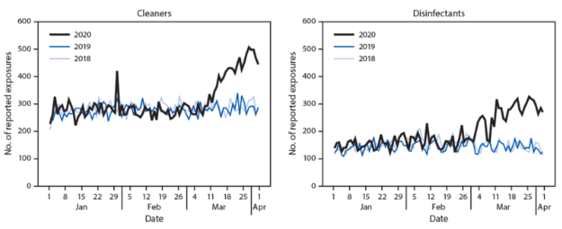

Chemicals and Coronavirus
Katherine Barno
Environmental Consulting at Olin - Spring 2020
The appearance of Covid-19 has caused a lot of fear and confusion. Although it is appropriate to take precautions to avoid catching the virus, such as wearing masks and staying six feet away from others, some steps are unnecessary. The measures just mentioned prevent the spread of disease through respiratory droplets, however they do not prevent the spreading of germs via fomites. A fomite is an object likely to carry infection, it could be clothing, furniture, or utensils. It is important that all of these surfaces are cleaned to slow the spread of Covid-19, however taking unnecessary steps to clean surfaces can have unintended consequences.
How Can I Disinfect Surfaces?
The EPA and CDC have published information to help the public clean surfaces that could house Covid-19, and many of the recommendations are simpler than you might think. For example, to clean the surfaces of electronic devices, people are advised to use alcohol-based wipes or spray containing at least 70% alcohol. Many people have rubbing alcohol (also known as isopropanol and isopropyl alcohol) in their homes. A more complete list of disinfectants for use against Covid-19 has been released by the EPA and can be found here.
This list includes common products like Comet Disinfecting Bathroom Cleaner (active ingredient: citric acid) and Clorox Pet Solutions Advanced Formula Disinfecting Stain & Odor Remover (active ingredient: Hydrogen Peroxide) which should be relatively environmentally friendly and completely effective.
What Can Cause Avoidable Harm?
The easiest category of cleaning products to replace in order to reduce environmental damage is aerosols. It seems simple to remove the risk of infection with a continuous stream of disinfectant at your fingertips, and perhaps that is why so many Americans have chosen to stock up on aerosol disinfectants. A TIME Business article by Tara Law on March 26, 2020 highlighted differences in the sales of products in the US between week ending 3/14/2019 and the week ending 3/14/2020. While vegetable party platters had decreased in popularity by 7%, purchases of aerosol disinfectants had increased by 519%.
Many people associate aerosols with the depletion of the ozone layer in Earth’s stratosphere. While it is true that older aerosols lead to this depletion, since the 1970s companies have largely eliminated the use of chlorofluorocarbons (CFCs). The modern propellants that replaced the CFCs, hydrocarbons and compressed gasses (like nitrous oxide), do not deplete the ozone layer but are not as friendly as they might seem. Today's aerosols still emit volatile organic compounds (VOCs) that contribute to pollution. Somewhat ironically, they can contribute to ground-level ozone levels, an important part of asthma-inducing smog.
Fortunately, almost anything that can be found in an aerosol can be found in a normal spray bottle, wipe, liquid, or cream. These other forms emit lower levels of VOCs and are just as effective when used properly.
How Do I Disinfect Safely?
Always read the instructions for use and/or warning labels on you cleaning compounds. That said, some other good rules of thumb are to make sure you are in a well ventilated area, do not ingest them, do not mix them with other cleaning compounds, and keep them off of your eyes and skin. Reports of exposures to cleaners and disinfectants to US poison control centers have been higher than usual since mid March (of 2020). The following figures have been released by the CDC:

Number of daily exposures to cleaners and disinfectants reported to U.S. poison centers — United States, January–March 2018, 2019, and 2020. (The spike on the “Cleaners” plot on Jan 29, 2020 is from an accidental exposure to a cleaning agent within a school.)
It is reasonable to assume that the increase in exposures to cleaners and disinfectants is due to their increased use. In one reported case, a woman was exposed to a disinfectant while doing what she thought would keep her safe.
“An adult woman heard on the news to clean all recently purchased groceries before consuming them. She filled a sink with a mixture of 10% bleach solution, vinegar, and hot water, and soaked her produce. While cleaning her other groceries, she noted a noxious smell described as “chlorine” in her kitchen. She developed difficulty breathing, coughing, and wheezing, and called 911. She was transported to the emergency department (ED) via ambulance and was noted to have mild hypoxemia and end-expiratory wheezing. She improved with oxygen and bronchodilators. Her chest radiograph was unremarkable, and she was discharged after a few hours of observation.”
-Chang A, Schnall AH, Law R, et al.
Unless otherwise stated on the label, chemicals should always be diluted with room temperature water. Steam and heat from water can carry VOCs into the air, and if your area is not well ventilated you may end up exposing yourself to compounds you had tried to dilute. It is always a good idea to check the temperatures your compounds should be stored and used at. It is also wise to have a pair of reusable thick rubber gloves for cleaning.
Shouldn’t Everything I Can Buy Be Safe?
Ideally, yes, however it can be difficult to pass laws to regulate an ever-changing chemical market. The Safe Drinking Water Act (effective 1974, amended 1986 and 1996) and The Toxic Substances Control Act of 1976 (TSCA) empower the EPA to set regulation standards for water quality, require reporting, record-keeping and testing requirements, and restrictions relating to chemicals. The TSCA generally excludes food, drugs, cosmetics, pesticides and certain others.
The TSCA is from 1976, and many of its focuses are out of date. For example, this act tries to regulate polychlorinated biphenyls (PCBs), which the EPA banned the use of in 1979. Another of its targets was lead based paint. The use of lead in household paints was ended in 1978. Asbestos is also a concern of the act, and was widely used until the 1970s. However, even though many older buildings may still contain asbestos, it is not commonly used today.
In 1974 and 1976, these laws were steps in the right direction. It is important that we keep stepping in the right direction by updating our regulations and granting more authority to regulatory bodies like the EPA.
Sources:
Chang A, Schnall AH, Law R, et al. Cleaning and Disinfectant Chemical Exposures and Temporal Associations with COVID-19 — National Poison Data System, United States, January 1, 2020–March 31, 2020. MMWR Morb Mortal Wkly Rep 2020;69:496–498. DOI: http://dx.doi.org/10.15585/mmwr.mm6916e1
“Cleaning and Disinfection for Households.” Centers for Disease Control and Prevention, Centers for Disease Control and Prevention, 7 May 2020, www.cdc.gov/coronavirus/2019-ncov/prevent-getting-sick/cleaning-disinfection.html.
Law, Tara. “What Americans Are Buying to Prepare for COVID-19.” Time, Time, 26 Mar. 2020, time.com/5810811/coronavirus-shopping-data/.
UCSF Institute for Health & Aging, UC Berkeley Center for Environmental Research and Children's Health, Informed Green Solutions, and California Department of Pesticide Regulation. Green Cleaning, Sanitizing, and Disinfecting: A Toolkit for Early Care and Education, University of California, San Francisco School of Nursing: San Francisco, California, 2013.
“Summary of the Safe Drinking Water Act.” EPA, Environmental Protection Agency, 4 Feb. 2020, www.epa.gov/laws-regulations/summary-safe-drinking-water-act.
“Summary of the Toxic Substances Control Act.” EPA, Environmental Protection Agency, 10 Sept. 2019, www.epa.gov/laws-regulations/summary-toxic-substances-control-act.